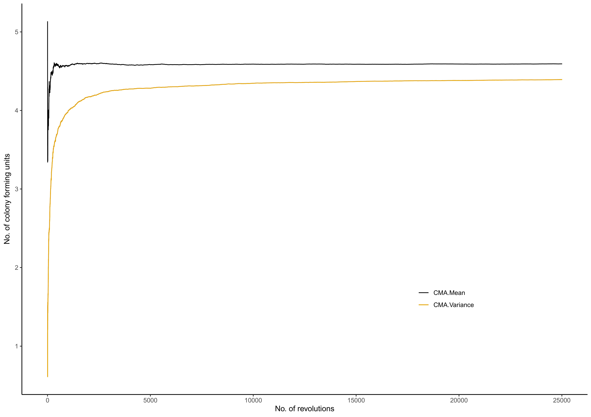

R/sim_pois_stages.R
sim_pois_stages.RdThis function creates a graphical display of the mean and variance changes at each mixing stage.
sim_pois_stages(mu, sigma, alpha_in, k, l, rate, distribution, n_sim)
| mu | the average number of CFUs (\(\mu\)) in the mixed sample, which is in a logarithmic scale if we use a Lognormal / Poisson lognormal distribution |
|---|---|
| sigma | the standard deviation of the colony-forming units in the mixed sample on the logarithmic scale (default value 0.8) |
| alpha_in | concentration parameter at the initial stage |
| k | number of small portions / primary samples |
| l | number of revolutions / stages |
| rate | concentration parameter changing rate in each of the revolutions |
| distribution | what suitable distribution type we have employed for simulation such as |
| n_sim | number of simulations |
Mean and variance changes at each mixing stage.
Let \(N'\) be the number of colony-forming units in the mixed sample which is produced by mixing of \(k\) primary samples and \(N' = \sum N_i\). This function produces a graphical display of the mean and variance changes at each mixing stage. It is helpful to identify the optimal number of revolutions of the mixture, which is a point of mixing that initiates Poisson-like homogeneity.
mu <- 100 sigma <- 0.8 alpha_in <- 0.01 k <- 30 l <- 25000 rate <- 0.001 distribution <- "Poisson lognormal-Type B" n_sim <- 200 sim_pois_stages(mu, sigma , alpha_in, k, l, rate, distribution, n_sim) 